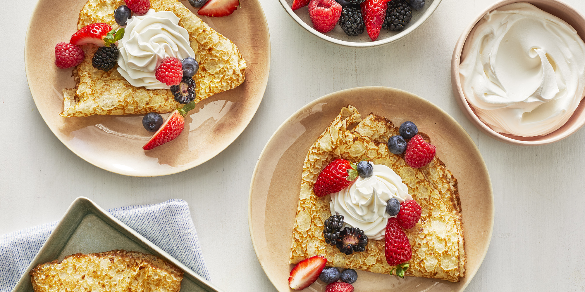

Basic Crepes

Description
The simple pleasure of this delicious desert symbolizes prosperity in France. With a holiday devoted to crepes, this delicious dessert says royalty.
Ingredients
- 1 cup all-purpose flour
- 2 eggs
- 1/2 cup milk
- 1/2 cup water
- 1/4 teaspoon salt
- 2 tablespoons butter, melted
Directions
- In a large mixing bowl, whisk together the flour and the eggs. Gradually add in the milk and water, stirring to combine. Add the salt and butter; beat until smooth.
- Heat a lightly oiled griddle or frying pan over medium high heat. Pour or scoop the batter onto the griddle, using approximately 1/4 cup for each crepe. Tilt the pan with a circular motion so that the batter coats the surface evenly.
- Cook the crepe for about 2 minutes, until the bottom is light brown. Loosen with a spatula, turn and cook the other side. Serve hot.
Back to top
Back to homepage